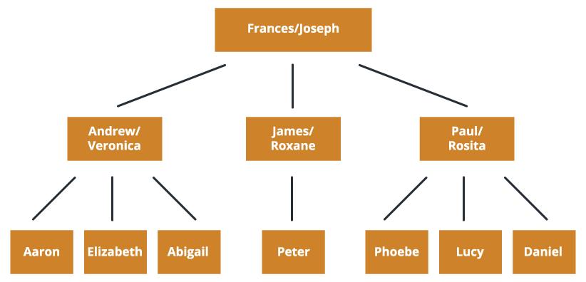
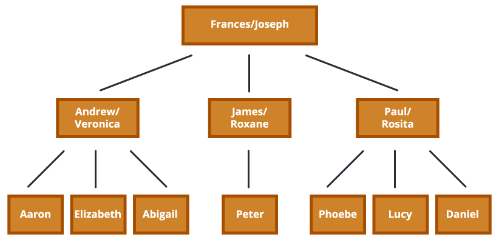
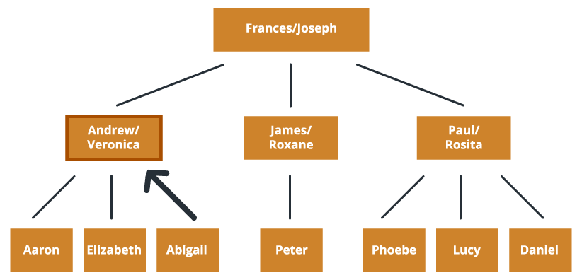
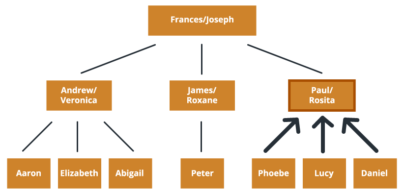
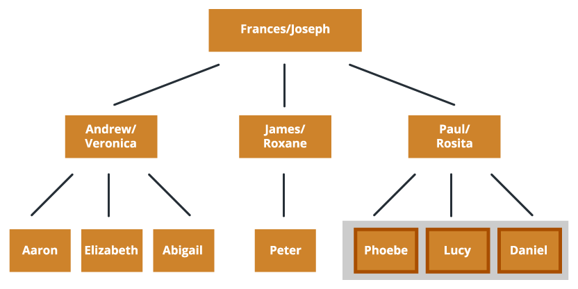
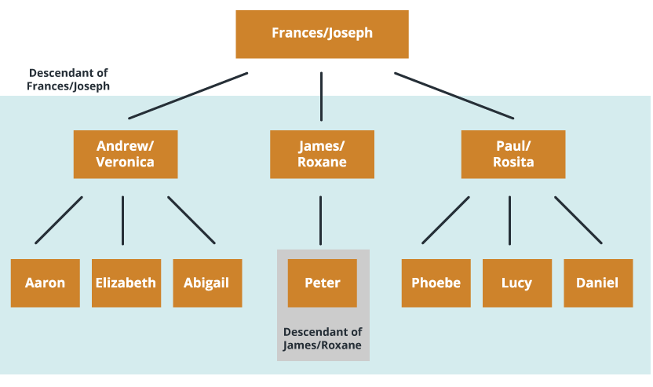
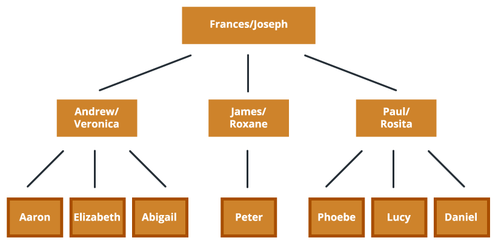
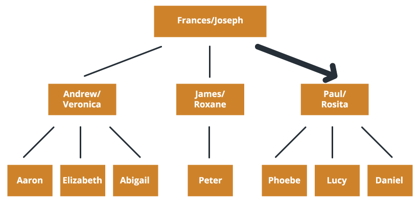
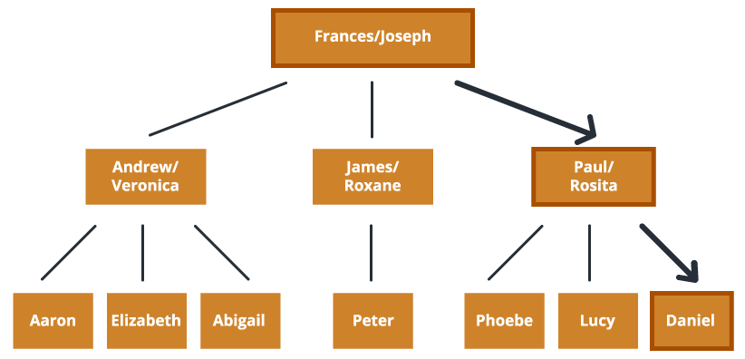
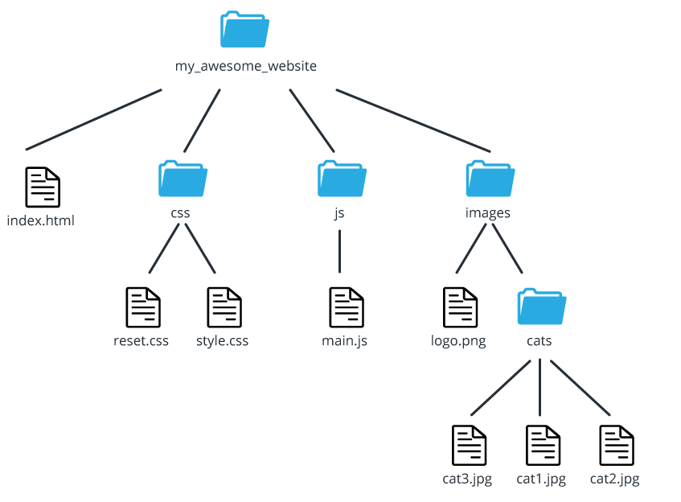

UI Design
August 2015
Read the document below and complete the exercises at the bottom. Send your answers to abby@theironyard.com by 5:00pm (CST) on August 20th. Please submit answers for this exercise as a word document.
Tree Structures
Grab your hoverboard, your self-lacing Nike's, and power on the Delorean because we're taking a trip back to the future (or actually just back to the past). Do you remember in elementary school when you had to make a family tree? It probably looked something like this:
Tree structures are a simple way of organizing data for any website or application. They get their name from the fact that they look like a family tree or an upsidedown tree. It will be important to understand the different parts of a tree structure so that you can structure your code similarly. So, looking at my family tree, lets break it apart.
Node
A node is a single point of data in the tree structure. In terms of my family, this would correspond to an individual person or pair of people.
Root
The root (or root directory) is the top most node of the tree (Frances/Joseph). When it comes to application structure, the root will be the node that stores all of the folders/files.
Parent
The parent is any node that is directly above the node in question. In the case of my family tree, if Abigail is the node in question, the Andrew/Veronica node is the parent. Andrew/Veronica is also the parent of Aaron and Elizabeth. James/Roxane, Paul/Rosita, and Frances/Joseph are also parents.
Child
A child node is the node(s) directly below the node in question. Just like in a family tree, a parent can have multiple children, but a child can only have one parent. The node in question in this example is Paul/Rosita. Phoebe, Lucy, and Daniel are all children of the Paul/Rosita node.
Sibling
Sibling nodes are nodes with the same parent. Phoebe, Lucy, and Daniel are all siblings because their parent node is Paul/Rosita. Aaron, Elizabeth, and Abigail are also siblings with each other, while Peter has no siblings.
Descendant (or ancestor)
A descendant node is one that can be traced back from the node in question. For example, everyone on the tree is a descendent of the Frances/Joseph node. Peter is the only descendant of James and Roxane.
Leaf
Much like an actual tree, a data tree has a few structural elements as well. The first is a leaf. A leaf is a node with no children. In this case, Aaron, Elizabeth, Abigail, Peter, Phoebe, Lucy, and Daniel are all leaves.
Edge
An edge is similar to the branch of a tree in that it connects different nodes. The highlighted arrow is an edge between Frances/Joseph and Paul/Rosita.
Path
Finally, a path is a group of edges and nodes that connects a node with its descendant. This is going to be very important because paths are ways to connect different folders and files to our website in our code. In this example, there is a path from Frances/Joseph to Daniel.
Tree Exercises
When it comes to our code, HTML is a tree. The nodes of our tree become a system of files and folders. The following exercises will help to solidify you knowledge of tree structures, but unlike the above examples, will be based off of the basic file structure for a website (not a family tree).
Questions
- What is the root directory?
- How many leaf nodes does the root directory have?
- What is the parent of main.js?
- What is/are the sibling(s) of main.js?
- What are the leaf nodes?
- How many ancestors does main.js have?
- What are the children of my_awesome_website?
- What is/are the sibling(s) of cat2.jpg?
- What are the descendants of css?
- How many children of the root node are leaves?
- What are the descendants of images?
- What are the children of css?
- What are cat3.jpg's ancestors (starting with it's parent and working your way up)?
- How many edges are between images and cat1.jpg?
- What are the nodes on the path (and including) my_awesome_website and cat2.jpg? (You should write this answer starting with my_awesome_website and ending at cat2.jpg with a / representing each edge between a node)